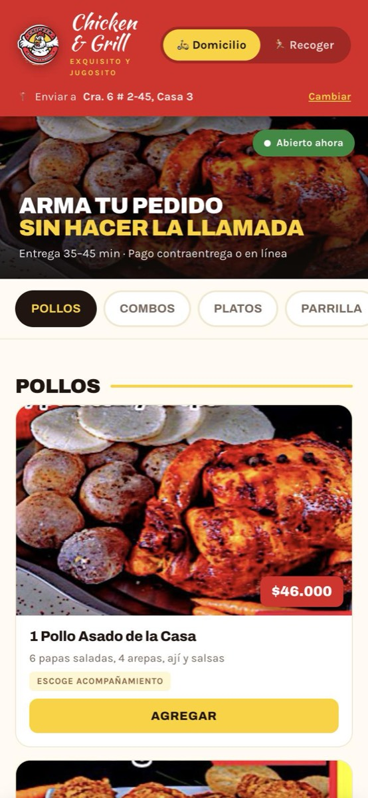
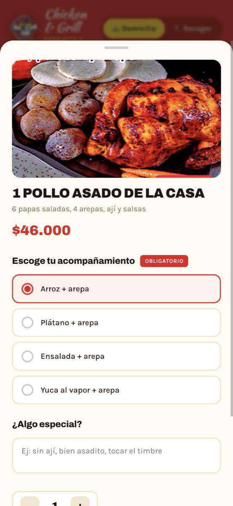
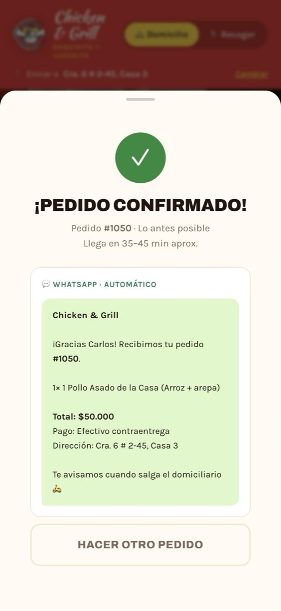
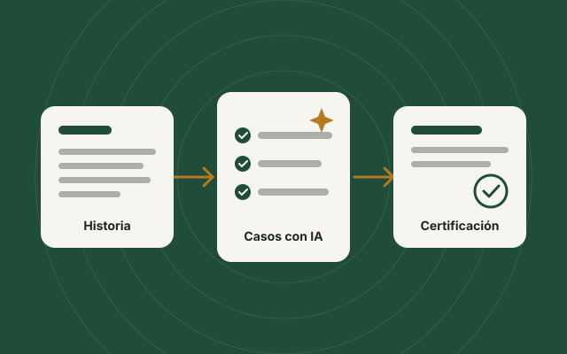

Tecnología que trabaja para su negocio.
Por Sebastián González · Desarrollo web y calidad de software
Páginas web, automatizaciones y presencia en Google, probadas antes de entregarse y a nombre de su negocio.
Lo que puedo hacer por su negocio
Soluciones concretas, explicadas sin tecnicismos y a la medida de lo que su negocio necesita.
-
Páginas web institucionales
Que sus clientes lo encuentren, sepan quién es y lo contacten con un toque.
-
Catálogos con cotización por WhatsApp
Sus clientes eligen productos y cantidades, y le envían la lista por WhatsApp. Usted decide si muestra precios o cotiza cada pedido.
-
Automatizaciones e inteligencia artificial
Menos trabajo manual: respuestas automáticas en WhatsApp, formularios que llegan solos a una hoja de cálculo y herramientas con inteligencia artificial que le ahorran tiempo en tareas del día a día.
-
Revisión y pruebas de su página o aplicación
Reviso lo que ya tiene como lo hace un analista de calidad: encuentro errores, fallas en el celular y riesgos de seguridad antes de que los vean sus clientes.
-
Presencia en Google y Google Maps
Que su negocio aparezca en Google y en Google Maps cuando lo buscan.
-
Alojamiento y mantenimiento
Su página en línea y a su nombre, con un plan de mantenimiento opcional para corregir errores y mantenerla al día.
-
Placas y tarjetas NFC para reseñas en Google
Una placa o tarjeta con un chip: su cliente acerca el celular y se abre directo la página para dejarle una reseña en Google, sin buscar ni escribir nada. Más reseñas hacen que más personas lo encuentren y confíen en su negocio.
Funciona con la mayoría de celulares actuales.
¿Necesita algo más grande?
Tiendas en línea con pasarelas de pago, sistemas a la medida y otros proyectos más complejos. Cuénteme qué necesita: lo evaluamos juntos y le digo con claridad qué se puede hacer, en qué tiempo y cómo.
Mis compromisos con usted
Lo que puede esperar de mí en cada proyecto, sin letra pequeña.
-
Todo a nombre del cliente
El dominio, el alojamiento y los accesos quedan a su nombre. Su página es suya.
-
Todo claro desde el inicio
Antes de empezar sabe qué incluye, qué no incluye, cuánto tarda y cuánto cuesta. Sin sorpresas.
-
Revisión en cada etapa
Usted ve y aprueba cada avance antes de seguir con el siguiente paso.
-
Pruebas antes de publicar
Reviso su página en celular y computador, como analista de calidad, antes de que la vean sus clientes.
-
Trato directo
Habla conmigo, sin intermediarios, y le respondo por WhatsApp.
-
Soporte después de la entrega
Corrijo los errores durante un periodo acordado. Si quiere, después seguimos con un plan de mantenimiento.
Así trabajamos, paso a paso
Usted sabe en todo momento en qué vamos y cuándo le toca participar.
-
Conversamos
Me cuenta qué necesita y qué busca para su negocio.
-
Propuesta
Le envío por escrito qué incluye, cuánto tarda y cuánto cuesta.
-
Acuerdo
Aprobamos juntos el alcance y arrancamos.
-
Diseño
Ve cómo se verá su página antes de construirla.
-
Construcción
La construyo y le muestro los avances.
-
Pruebas
La reviso en celular y computador antes de publicar.
-
Publicación
Su página en línea, a su nombre.
Algunos de mis proyectos
Trabajos reales que muestran lo que puedo hacer por su negocio.
-



Demo · Restaurante
Sistema de pedidos para Chicken & Grill
El reto: que los clientes del asadero pudieran armar su pedido desde el celular, sin hacer la llamada.
Lo que hice: un menú con fotos y categorías, opciones obligatorias por plato, carrito con el total y confirmación automática del pedido por WhatsApp.
Ver las pantallas del sistema de pedidos (se abre en una pestaña nueva) -

Proyecto propio · Calidad de software
Automatización de pruebas con inteligencia artificial
El reto: en mi trabajo como analista de calidad, buena parte del tiempo se iba en tareas manuales y repetitivas: redactar casos de prueba, reunir evidencias y armar informes.
Lo que hice: creé mis propias herramientas que, con apoyo de un agente de inteligencia artificial, redactan los casos de prueba, reúnen las evidencias y generan la certificación en PDF con un solo comando.
Sobre mí
Soy Sebastián González. Mi oficio es encontrar los errores antes de que los encuentre su cliente.
Trabajo como analista de calidad de software (QA) en una empresa de desarrollo y soy estudiante de Ingeniería de Software. En mi día a día pruebo aplicaciones, diseño casos de prueba y automatizo pruebas con inteligencia artificial.
Creé Gonztech para llevar ese mismo cuidado a negocios como el suyo: páginas y herramientas que se revisan paso a paso antes de entregarse.
Por qué la calidad es mi diferencia
Pruebo como lo haría su cliente: en celular y en computador, paso por paso.
Dejo por escrito lo que reviso, para que usted sepa qué se probó.
Le hablo claro: sin palabras técnicas y sin prometer lo que no puedo cumplir.
Hablemos de su negocio
Una conversación corta basta para saber por dónde empezar. Sin compromiso.
-
WhatsApp
+57 317 568 0756
Escríbame por WhatsApp (se abre en una pestaña nueva) -
Correo
contacto.gonztech@gmail.com
Escríbame un correo
¿Prefiere dejarme un mensaje?
Le respondo por el medio que usted me indique.